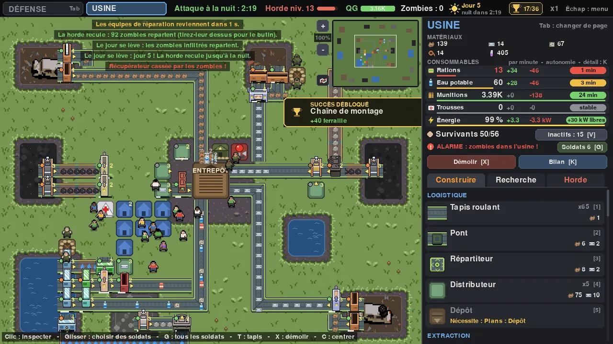
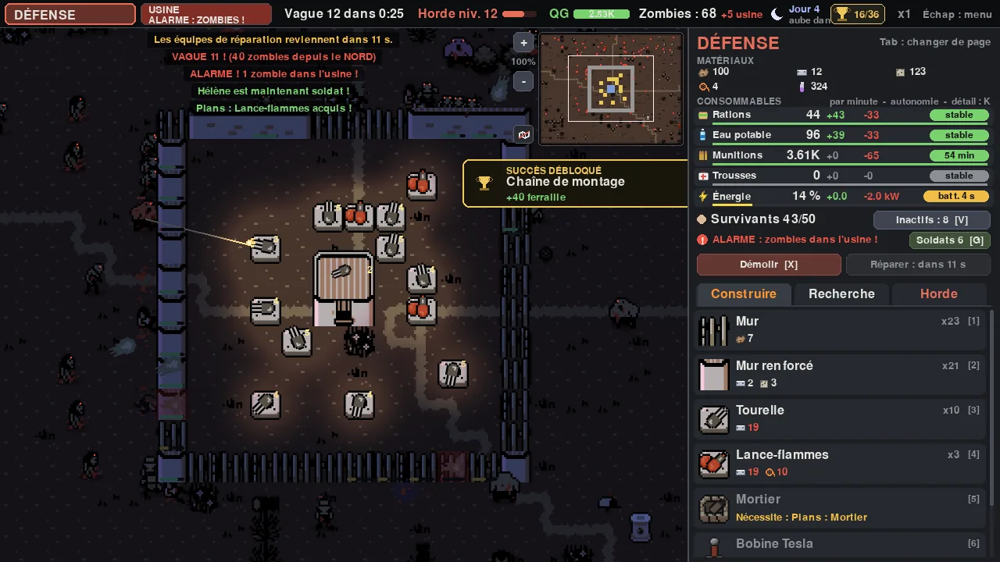

JEU VIDEO
Zombie Factory
Produire le jour, survivre la nuit. Un jeu de gestion d'usine et de survie où les deux moitiés tournent en même temps.
- Le jour, on pose des extracteurs, on relie les machines par des tapis roulants et des ponts, on nourrit ses survivants.
- La nuit, la horde attaque en trois vagues : murs, tourelles, lance-flammes, mortiers et bobines Tesla.
- La horde mute selon les défenses que tu utilises le plus, et le bruit de l'usine l'attire.
- Cartes générées au hasard, cartes bonus toutes les 5 vagues, et un but : construire l'émetteur radio et tenir jusqu'à l'évacuation.
Python · pygame
Graphismes : tilesets d'Ittai Manero et de sierrassets.